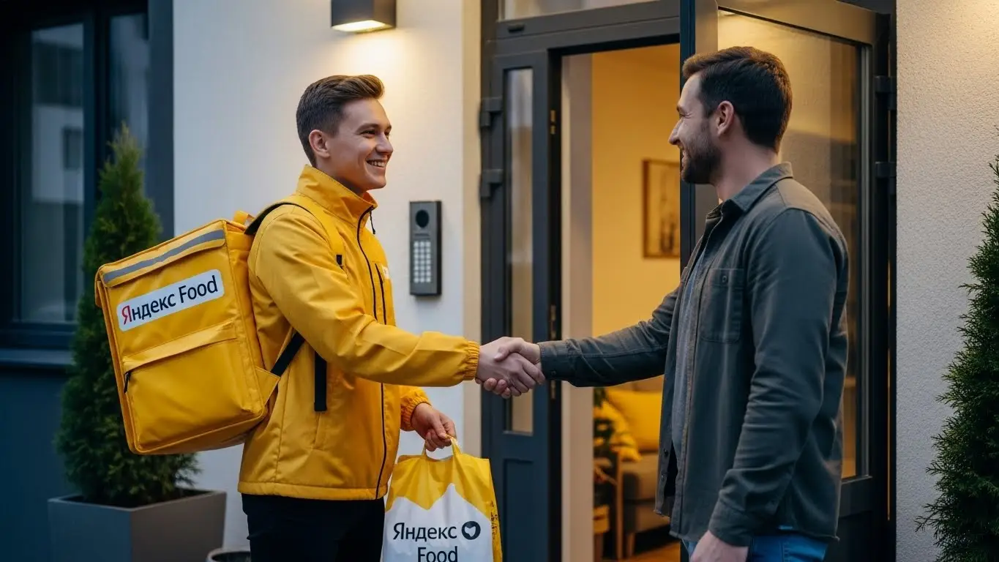
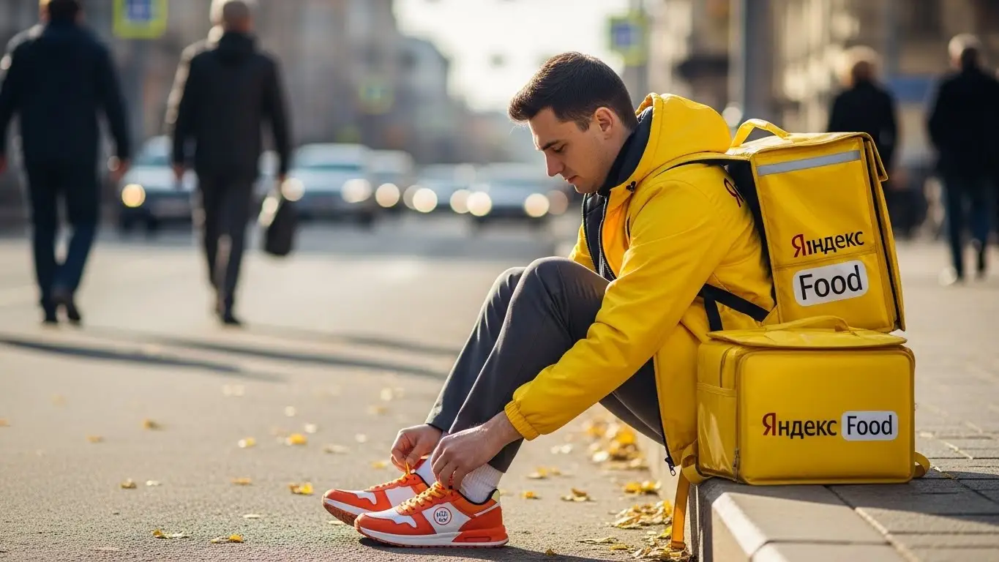

Сколько зарабатывает курьер Яндекс Еды в Барнауле 2025-2026
- Работа курьером Яндекс Еды в Барнауле: для кого эта вакансия и что вы получите
- Сколько вы будете зарабатывать курьером в Барнауле: калькулятор дохода и разбор выплат
- Реальный заработок курьера в Барнауле: смены и месячный доход
- График работы и форматы занятости
- Требования к кандидату и документы
- Самозанятость, налоги и юридическая чистота
- Пошаговое оформление и первый выход на линию в Барнауле
- Пешком, на вело или на авто: что выгоднее в Барнауле
- Районы, маршруты и «топовые» зоны заказов в Барнауле
- Безопасность, страховка, штрафы и оплата простоя
- Плюсы и возможные минусы работы курьером в Барнауле
- Реальные истории и отзывы курьеров из Барнаула
- Ответы на частые вопросы о работе курьером
- Краткая шпаргалка: главные вопросы и ответы
- Итоги и ваш следующий шаг
Все города
Здорово, земляк! Думаешь, что работа курьером Яндекс Еда в Барнауле — это просто кататься по городу, слушать музыку и рубить лёгкие деньги? А может, наоборот, боишься «убить» машину на наших дорогах, стоять в вечных пробках на Ленинском или у ТРЦ «Европа» за копейки и нарваться на штрафы? Правда, как обычно, где-то посередине. И я здесь, чтобы показать тебе, где именно — без прикрас и рекламных обещаний.
Чтобы не сдуться через месяц и не разочароваться, нужно понимать всю «кухню» изнутри ещё до старта. Сколько реально уходит на бензин или ремонт велосипеда? Как налог для самозанятого съедает часть дохода? Почему одному курьеру сыпятся «жирные» заказы из центра, а другой часами ждёт заказ где-нибудь на Потоке? Большинство новичков наступают на одни и те же грабли, теряя время и деньги просто по незнанию местной специфики. Чтобы сразу оценить потенциальный доход и увидеть актуальные требования, изучите сводную информацию, ведь работа курьером Яндекс Еда в Барнауле имеет свои нюансы, которые собраны на странице с калькулятором и формой заявки.
В этом гиде мы разберём всё по косточкам. Посчитаем, сколько чистыми можно заработать в час, день и месяц пешком, на велосипеде и на авто именно в реалиях Барнаула. Я покажу на карте самые «рыбные» районы и мёртвые зоны, расскажу, как наша сибирская зима и летняя жара влияют на заказы и доход. Мы выясним, за что реально штрафуют и как этого избежать, и сравним условия с другими доставками, которые есть в нашем городе.
Меня зовут Алексей. Я сам несколько лет откатал с жёлтой сумкой по всему Барнаулу, а сейчас держу свой небольшой таксопарк-партнёр и вижу всю систему с другой стороны. Так что никакой рекламной шелухи, обещаний золотых гор и воды — только мясо, только хардкор по-барнаульски. Пристегивайся, сейчас всё разложу по полочкам.
Чтобы тебе было проще сориентироваться, вот короткий гид по ключевым темам статьи.
Что ты точно узнаешь из этого разбора по Барнаулу
В этой статье ты ТОЧНО узнаешь:
- Сколько реально можно заработать в Барнауле за смену пешком, на вело и на авто, уже за вычетом расходов?
- В каких районах Барнаула — от центра до Индустриального — больше всего заказов и как ловить «фиолетовые зоны»?
- За что на самом деле снижают рейтинг и как работает система «штрафов» в Яндекс Еде?
- Как быстро оформить самозанятость, сколько платить налогов и какие документы нужны для старта в Барнауле?
- Что выгоднее в барнаульских реалиях — работать на коротких слотах в пик или брать длинные смены?
- Как работает оплата простоя, если заказов мало, и что покрывает бесплатная страховка?
А если тебе некогда читать всю статью — переходи сразу к заключению, где ты найдёшь короткие ответы на все эти вопросы и указания, в каких разделах искать подробности.
А вот наглядная инфографика о том, что ждёт курьера в Барнауле.
Яндекс Еда в Барнауле: главное в цифрах
Доход в час
350-550 ₽
В часы высокого спроса и с бонусами
За смену 8 часов
2800-4000 ₽
Средний доход вело- и автокурьера
Чаевые
+15-25%
Дополнительно к доходу от заказов
График
Свободный
Слоты от 2 часов, можно совмещать
Работа курьером Яндекс Еды в Барнауле: для кого эта вакансия и что вы получите
Давай по-честному разберём, кому в Барнауле эта работа зайдёт, а кому нет. Я вижу на линии самых разных людей, и у каждого своя причина. Это не та работа, где нужно сидеть от звонка до звонка и смотреть на начальника. Здесь ты сам себе хозяин, и это главное.
Эта вакансия — отличный вариант для студентов местных вузов, например, АлтГУ или «политеха». Можно легко совмещать с парами: откатал пару часов после учёбы — получил живые деньги на карту. Идеально подходит и тем, кому нужна подработка к основной зарплате. У меня в таксопарке мужики после смены за рулём иногда берут пару заказов по пути домой. Также это хороший старт для тех, у кого пока нет опыта работы — здесь не смотрят на диплом, важна только твоя ответственность и расторопность. Ну и, конечно, это работа для тех, кому важен свободный график и ежедневные выплаты. Деньги нужны сегодня, а не через месяц — знакомая история.
Кому подойдёт эта работа в Барнауле
Если ты узнаёшь себя в одном из этих пунктов, то тебе стоит попробовать. Во-первых, это студенты. График можно подстроить под любое расписание, хоть между парами выходи на час-другой. Во-вторых, люди без опыта работы. Здесь не требуют резюме и рекомендаций, всему научат за пару часов онлайн. Главное — желание работать.
В-третьих, это те, кому нужна подработка. Если основной зарплаты не хватает или просто хочешь иметь дополнительный доход на свои цели — выходи на линию по вечерам или в выходные. В-четвёртых, это водители. Если есть своя машина, можно выполнять больше заказов и на большие расстояния, что напрямую влияет на заработок. И, наконец, это просто люди, которые ценят свободу: не хотят сидеть в офисе, любят движение и хотят получать деньги за сделанную работу сразу, а не ждать дня зарплаты.
Главные преимущества для жителей районов Индустриальный, Ленинский, Центральный
Одно из главных удобств в Барнауле — возможность работать рядом с домом. Тебе не нужно тратить час-полтора, чтобы добраться до «офиса» через пробки на проспекте Ленина или Калинина. Ты просто выходишь из дома, включаешь приложение «Яндекс Про» и начинаешь работать в своём районе.
Например, если ты живёшь в Индустриальном районе, где много новостроек и молодых семей, заказов из магазинов и пиццерий всегда хватает. Не нужно ехать в центр. То же самое касается и Ленинского района — там полно и жилых кварталов, и небольших кафе. А если ты из Центрального района, то тут вообще раздолье: рестораны, кафе, бизнес-центры — заказы есть практически круглосуточно. Ты экономишь время и деньги на дорогу, а работаешь в знакомой обстановке, где знаешь каждый двор.
Краткое обещание по доходу и условиям
Теперь о главном — о деньгах. В Барнауле активный курьер за полную смену (8–10 часов) может зарабатывать в среднем 2500–4000 рублей. Конечно, сумма зависит от способа передвижения, погоды и твоей скорости. Если выходить на подработку на 3–4 часа в день, можно рассчитывать на 1000–1800 рублей. В месяц при полной занятости выходит от 50 до 85 тысяч рублей и даже больше, если работать на машине и брать пиковые часы.
Ключевые условия просты: свободный график, который ты составляешь сам в приложении, и ежедневные выплаты на карту. Опыт работы не требуется, начать можно буквально на следующий день после регистрации. Ты сам решаешь, когда и сколько работать, а сервис обеспечивает тебя заказами и стабильным доходом.
Вот недавний пример. Парень-студент, живёт недалеко от ТРЦ «Европа» в Индустриальном. Выходит на велосипеде на 4 часа после учёбы, катается по своему району. За вечер спокойно делает 1500-1700 рублей. Говорит, на жизнь, развлечения и помощь родителям хватает, и при этом не в ущерб учёбе.
В общем, работа курьером в Барнауле — это реальная возможность зарабатывать без начальников и жёсткого графика. Главное — правильно оценить свои силы и выбрать удобный для себя район. Начать советую именно со своего квартала: и места знакомые, и до дома близко, если устанешь.
Сколько вы будете зарабатывать курьером в Барнауле: калькулятор дохода и разбор выплат
Многих новичков пугает, что заработок непрозрачный. На самом деле всё просто, если разобраться. Твой доход — это не какая-то фиксированная ставка, а сумма нескольких составляющих. Система построена так, чтобы мотивировать тебя работать эффективнее: чем больше и быстрее ты доставляешь, тем больше получаешь.
Давай разберём по косточкам, из чего складываются выплаты, и как ты можешь прикинуть свой будущий доход. В приложении «Яндекс Про» всё видно: за что и сколько начислено. Никаких скрытых комиссий или непонятных вычетов, особенно если работаешь как самозанятый — это самый прозрачный вариант оформления. Всё по-честному: выполнил заказ — получил деньги.
Из чего складывается доход курьера
Твой итоговый заработок за смену формируется из нескольких частей. Понимание этой механики поможет тебе зарабатывать больше.
- Оплата за заказ. Это базовая стоимость за то, что ты забираешь и доставляешь заказ.
- Доплата за расстояние. Чем дальше ехать от ресторана до клиента, тем больше доплата. Система считает оптимальный маршрут и начисляет за каждый километр пути.
- Повышающие коэффициенты. В часы пик (обед, ужин), в плохую погоду (дождь, снегопад) или в зонах с высоким спросом на карте в «Яндекс Про» появляются фиолетовые зоны. Заказы из этих зон оплачиваются с дополнительным множителем. Это самый верный способ увеличить доход.
- Бонусы. Сервис часто предлагает персональные цели. Например, выполни 15 заказов за день и получи бонус 500 рублей. Это отличная мотивация.
- Чаевые. Клиенты могут отблагодарить тебя за хорошую работу через приложение. Все чаевые — твои, сервис не берёт с них комиссию.
- Оплата простоя. Важная фишка. Если ты пришёл в ресторан, а заказ ещё не готов, включается платное ожидание. Ты не теряешь деньги из-за медлительности кухни.
- Компенсация проезда. На некоторых заказах, особенно дальних, может быть предусмотрена частичная компенсация проезда на общественном транспорте.
Как пользоваться калькулятором дохода
Чтобы не гадать на кофейной гуще, сколько ты сможешь заработать, на сайте есть специальный калькулятор. Пользоваться им элементарно. Сначала выбираешь свой город — Барнаул. Затем указываешь, как планируешь доставлять: пешком, на велосипеде или на личном автомобиле.
Дальше двигаешь ползунки: сколько часов в день и сколько дней в неделю ты готов работать. Например, 4 часа в день, 5 дней в неделю. Калькулятор мгновенно обработает эти данные и покажет примерный диапазон твоего дохода за день и за месяц. Цифры эти, конечно, средние, но они дают вполне реальное представление о заработке в Барнауле и помогают определиться с форматом работы.
Калькулятор дохода курьера в Барнауле
Примерный доход в месяц:
64 000 ₽
(около 3 200 ₽ в день)
* Расчёт основан на средней ставке в Барнауле (~400 ₽/час). Реальный доход зависит от спроса, бонусов и типа доставки.
Чтобы увидеть актуальные условия, требования и сразу заполнить анкету, переходи на страницу работа курьером Яндекс Еда в твоём городе — там всё собрано в одном месте.
Примеры расчёта для пешего, вело- и авто‑курьера в Барнауле
Чтобы было понятнее, давай рассмотрим три реальных сценария для Барнаула.
- Пеший курьер. Работает в центре, в районе проспекта Ленина и улицы Молодёжной. Берёт короткие заказы в радиусе 1–2 км. Выходит на 6 часов в день в обеденное и вечернее время. За счёт высокой плотности заказов и небольших расстояний он может сделать 12–15 доставок. Его средний заработок за смену составит 1800–2200 рублей.
- Велокурьер. Катается между спальными районами, например, в Индустриальном. Здесь расстояния больше, но на велосипеде их можно преодолеть быстро, минуя пробки. За 8-часовую смену он выполняет 18–25 заказов. Его доход будет в районе 2800–3500 рублей. Велосипед — это «золотая середина» по скорости и затратам.
- Водитель-курьер. На своей машине он может брать самые выгодные заказы: по всему городу, в отдалённые районы вроде посёлка Южный или во Власиху. Особенно выгодно работать в плохую погоду, когда коэффициенты максимальные. При полной занятости 8–10 часов его доход может достигать 3500–5000 рублей за смену, за вычетом расходов на бензин.
Сравнение типов курьеров в Барнауле
| Параметр | Пеший курьер | Велокурьер | Авто-курьер |
|---|---|---|---|
| Средний доход за 8 часов | 2000–2600 ₽ | 2800–3500 ₽ | 3500–5000 ₽ (до вычета ГСМ) |
| Лучшие районы | Центральный (плотная застройка) | Индустриальный, Ленинский (спальные районы) | Весь город, пригород (Южный, Власиха) |
| Плюсы | Нет расходов, фитнес | Скорость, маневренность, нет пробок | Комфорт, дальние заказы, высокий доход |
| Минусы | Низкая скорость, зависимость от погоды | Физическая нагрузка, нужен велосипед | Расходы на бензин и амортизацию авто |
У меня есть знакомый водитель-курьер, который прошлой зимой отлично заработал. Как только начинался сильный снегопад, он сразу выходил на линию. Пока остальные сидели дома, он брал заказы с огромными коэффициентами в частный сектор, куда пешком не дойдёшь. За одну такую 8-часовую смену в буран он привозил домой по 6-7 тысяч грязными. Говорит, главное — хорошая зимняя резина и знание города.
В итоге, твой заработок курьером в Барнауле напрямую зависит от тебя. Сервис Яндекс Еда даёт все инструменты: бонусы, коэффициенты, прозрачную систему начислений в приложении Яндекс Про. Твоя задача — грамотно ими пользоваться. Всегда смотри на карту спроса перед выходом на линию и старайся работать в «фиолетовых» зонах — это самый простой способ увеличить свой доход в полтора-два раза.
Реальный заработок курьера в Барнауле: смены и месячный доход
Давай начистоту, без рекламных обещаний. Вопрос «сколько я буду зарабатывать» — главный, и на него нет одного ответа. Твой доход — это не оклад, а результат твоей работы, умноженный на спрос в конкретный момент. В Барнауле, как и везде, можно зарабатывать очень по-разному. Кто-то выходит на пару часов после основной работы и уносит 15–20 тысяч в месяц, а кто-то работает на машине полный день и видит цифры в 80–90 тысяч до вычета расходов и налога для самозанятых. Всё зависит от того, как, когда и на чём ты работаешь.
Главное, что нужно понять: твоя зарплата напрямую связана с количеством и стоимостью выполненных заказов. А стоимость, в свою очередь, зависит от расстояния, спроса, погоды и твоей расторопности. Система прозрачная: больше и качественнее работаешь в пиковые часы — больше получаешь, причём выплаты можно выводить на карту хоть каждый день. Никаких начальников и планов продаж, только ты, приложение и город.

Диапазон дохода для подработки и полной занятости
Если ты ищешь подработку на 2–4 часа в день, чтобы закрыть кредит или просто иметь карманные деньги, цифры в Барнауле будут примерно такие. Пеший курьер в центре за вечер может сделать 600–1200 рублей, доставляя заказы из Яндекс Еды. Велосипедист за то же время — уже 800–1500 рублей, потому что он быстрее и покрывает большее расстояние. Автокурьер на короткой смене заработает 1200–2000 рублей, но здесь нужно помнить про расходы на бензин. В месяц такая подработка приносит от 15 000 до 35 000 рублей.
При полной занятости, когда ты на линии по 8–10 часов, доход совсем другой. Пеший курьер, работая в плотной застройке центра, может рассчитывать на 1800–2500 рублей в день. Велокурьер, активно перемещаясь между районами, — на 2200–3000 рублей. Самые высокие доходы у водителей-курьеров: 3000–4500 рублей в день — это реальность, особенно в дни высокого спроса. В месяц при графике 5/2 или 2/2 это выливается в 50 000–90 000 рублей «грязными».
Как район, время суток и погода влияют на доход
Запомни три кита высокого заработка: место, время и погода. В Барнауле самые «жирные» зоны — это, конечно, центр в районе проспекта Ленина и Социалистического, где много кафе, ресторанов и офисов. Также стабильно много заказов генерируют крупные ТРЦ вроде «Galaxy», «Европа» и «Огни», особенно в выходные. В спальных районах, например, в Индустриальном, спрос растёт вечером, когда люди возвращаются с работы и заказывают ужин через Яндекс Еду.
Время — твой главный союзник. Пиковые часы — это обед (примерно с 12:00 до 14:00) и ужин (с 18:00 до 21:00). В это время на карте в «Яндекс Про» появляются «фиолетовые» зоны — это зоны с повышенным коэффициентом, где за тот же самый заказ платят в 1,5–2 раза больше. Пятница вечер, суббота и воскресенье — это практически один сплошной пик. А сибирская погода — это вообще отдельный множитель. Как только пошёл сильный дождь, снег или ударил мороз, количество заказов взлетает, а число курьеров на линии падает. Коэффициенты в такую погоду максимальные, да и клиенты чаще оставляют хорошие чаевые из благодарности.
Советы по увеличению заработка от опытных курьеров
Чтобы не просто работать, а именно зарабатывать, нужно подходить к делу с головой. Во-первых, планируй своё время. Заранее бронируй плановые слоты в приложении на самые пиковые часы — так у тебя будет приоритет в получении заказов. Во-вторых, не гоняйся за одним заказом с высоким коэффициентом через весь город. Лучше выбрать одну зону с постоянно высоким спросом, например, в центре, и работать там. Ты сэкономишь время и силы, а в итоге выполнишь больше заказов.
Изучи карту. Пойми, где находятся основные точки притяжения: рестораны, магазины, бизнес-центры. Если ты на велосипеде, продумай маршруты, где можно срезать через дворы и парки, минуя пробки на Красноармейском. Если на машине, старайся избегать заторов в час пик, выбирая для работы районы с более свободным движением. И не брезгуй маленькими заказами на короткие расстояния, если их много. Иногда выгоднее сделать три быстрых доставки по 150 рублей за час, чем час ждать одну на 400.
Вот реальный кейс от одного из водителей-курьеров в Барнауле. Парень работает полный день на своей машине. Утром он начинает в спальниках Индустриального района, развозит продукты из магазинов и заказы из Яндекс Лавки. К обеду смещается в центр, ловит заказы из ресторанов в рамках сервиса Яндекс Еда. После обеденного пика он берёт несколько дальних доставок в пригород, а к вечеру снова возвращается в густонаселённые кварталы. В прошлую снежную пятницу за 10 часов он сделал почти 6000 рублей. Его секрет — он не стоит на месте, а постоянно анализирует карту спроса в приложении и перемещается туда, где «горит».
Сравнение заработка в Барнауле по типам курьеров
| Параметр | Пеший курьер | Велокурьер | Автокурьер |
|---|---|---|---|
| Средний доход в час (пик) | 300–450 ₽ | 350–550 ₽ | 450–700 ₽ |
| Доход в месяц (подработка) | 15 000–25 000 ₽ | 20 000–30 000 ₽ | 25 000–40 000 ₽ |
| Доход в месяц (полная занятость) | 40 000–55 000 ₽ | 50 000–70 000 ₽ | 65 000–95 000 ₽ * |
| Лучшие районы | Центр, плотная застройка | Центр, спальные районы | Весь город, пригород |
*До вычета расходов на топливо, обслуживание авто и налога для самозанятых.
В итоге, твой реальный заработок в Барнауле — это уравнение со многими переменными. Но главный фактор — это твой подход. Работай в пиковые часы, следи за погодой, изучай город и используй преимущества своего транспорта. Мой совет: не пытайся объять необъятное, лучше стань экспертом в одном-двух районах, и тогда доход будет стабильным.
График работы и форматы занятости
Одно из главных преимуществ этой работы — гибкость. Ты сам себе начальник и сам решаешь, когда и сколько работать. Хочешь — выходи на пару часов вечером, хочешь — работай полную неделю. Это идеальный вариант для подработки или для тех, кому стандартный график с 9 до 18 не подходит. Студенты, люди на основной работе, молодые мамы — здесь каждый может выстроить график под свою жизнь, а не наоборот.
Система построена вокруг приложения «Яндекс Про». В нём ты видишь карту города с зонами, где сейчас нужны курьеры, и можешь либо выбрать заранее запланированный слот, либо просто выйти на линию в свободном режиме. Никаких объяснительных за опоздание или отгулов по заявлению. Твоя свобода и твоя ответственность.
Подработка после учёбы или основной работы
Совмещать доставку с чем-то ещё — самая распространённая история. Вот пара живых примеров из Барнаула. Есть у меня знакомый студент из АлтГТУ, живёт в общежитии. Он купил себе недорогой велосипед и после пар, примерно с 18:00 до 22:00, катается по центру. Берёт заказы из кафе на проспекте Ленина через сервис Яндекс Еда и развозит по ближайшим домам. В выходные может отработать смену подольше. В месяц у него выходит 20-25 тысяч рублей — на жизнь и развлечения хватает с головой.
Другой пример — менеджер, который работает в офисе до шести вечера. У него есть машина, и он выходит на линию 3-4 раза в неделю на 3-4 часа, плюс работает в один из выходных. Катается в основном по своему Индустриальному району, развозит заказы из гипермаркетов и пиццерий. Говорит, что такая подработка приносит ему дополнительные 30-35 тысяч в месяц, которые он откладывает на отпуск. Он не перенапрягается, работает в удобное время и получает живые деньги почти каждый день.
Полная занятость: как выглядит типичный день курьера
Если рассматривать доставку как основную работу, то день строится вокруг пиков спроса. Типичный день автокурьера на полной ставке выглядит примерно так. Он выходит на линию около 10-11 утра, начиная со своего района — выполняет утренние заказы из магазинов и «Яндекс Лавки». Ближе к 12 часам дня он смещается в сторону центра, где начинается обеденный бум заказов из ресторанов и кафе в Яндекс Еде.
После 15:00 спрос немного спадает. Это время можно использовать для короткого перерыва, обеда или выполнения нескольких дальних доставок между районами, например, из центра на Поток или в Новосиликатный. А с 18:00 начинается вечерний пик, самый прибыльный. Курьер снова возвращается в густонаселённые жилые массивы, где люди массово заказывают ужин и продукты. Работа продолжается до 22-23 часов. В конце смены можно включить в приложении режим «Домой», чтобы система подобрала заказ по пути.
Как планировать слоты и выходы через приложение «Яндекс Про»
«Яндекс Про» — твой главный рабочий инструмент. В нём есть раздел «Расписание», где можно выбрать и забронировать плановые слоты. Слот — это отрезок времени (например, с 18:00 до 22:00) в определённом районе. Работая на слоте, ты получаешь приоритет при распределении заказов, а иногда и гарантию минимального дохода, даже если заказов будет мало. Слоты на самые выгодные часы (вечера, выходные) разбирают быстро, так что планировать лучше заранее.
Если не хочешь привязываться к слотам, есть свободный режим. Просто выходишь на линию, когда удобно, в любой зоне, которая подсвечена на карте как активная. Это даёт максимум свободы, но доход может быть менее предсказуемым. Важный момент: если ты взял плановый слот, на него нельзя опаздывать. Приложение заранее напомнит, что пора выходить. Пунктуальность и выполнение слотов до конца напрямую влияют на твой рейтинг и уровень приоритета, а это, в свою очередь, — на количество и качество заказов в будущем.
Был у меня случай с новичком. Он поначалу выходил только в свободном режиме, когда придётся. Зарабатывал немного и жаловался на простои. Я ему посоветовал попробовать планировать неделю заранее: забронировать три вечерних слота в будни и два длинных на выходные в центре. Через неделю он пришёл довольный: за то же количество часов на линии заработал почти в полтора раза больше, потому что работал в самое «хлебное» время и получал заказы без перебоя.
В общем, график действительно гибкий, но для стабильного дохода лучше использовать планирование. Приложение даёт все инструменты, чтобы ты мог выстроить работу так, как удобно именно тебе. Мой совет: начни со свободных выходов, чтобы освоиться, а потом переходи на плановые слоты — так ты сможешь прогнозировать свой доход и работать эффективнее.
Требования к кандидату и документы
Многих новичков пугает, что для работы курьером нужен особый опыт или кипа бумаг. На деле всё гораздо проще. Условия работы в Яндекс Еде рассчитаны на то, чтобы начать мог практически любой желающий — даже без опыта. Никаких дипломов или резюме с тебя не спросят, главное — быть ответственным и адекватным.
Возраст, гражданство и базовые условия
Начнём с основ. Стандартное требование по возрасту для работы курьером — от 18 лет. Однако есть важное исключение: стать пешим курьером или велокурьером в Барнауле можно уже с 16 лет. Для этого понадобится письменное согласие от родителей или опекунов. Сам график будет выстроен с учётом закона: без ночных смен и переработок. А вот если планируешь работать курьером на автомобиле, тут без вариантов — строго с 18 лет и при наличии водительских прав.
По гражданству условия тоже лояльные: подойдёт паспорт РФ или любой страны из Евразийского экономического союза (ЕАЭС) — это Беларусь, Казахстан, Армения и Киргизия. Из общих требований — базовая физическая выносливость, особенно если собираешься много ходить или крутить педали. Также понадобится смартфон на базе Android, так как рабочее приложение «Яндекс Про» работает именно на этой системе.
Какие документы нужны для работы курьером
Чтобы оформление прошло быстро и гладко, советую заранее подготовить небольшой пакет документов. Вот что тебе понадобится:
- Паспорт. Основной документ, удостоверяющий личность. Нужен для заключения договора и регистрации в системе.
- ИНН (Идентификационный номер налогоплательщика). Необходим для оформления статуса самозанятого и последующей уплаты налога. Если не знаешь свой номер, его легко найти за пару минут на сайте ФНС или Госуслуг.
- Личная банковская карта. Подойдёт карта любого российского банка, оформленная на твоё имя. На неё будут приходить все выплаты, поэтому убедись, что она активна.
- Медицинская книжка. Поскольку работа связана с доставкой еды, медкнижка часто является обязательным требованием. Если её нет, не переживай — многие партнёры в Барнауле помогают с её быстрым оформлением.
Для граждан стран ЕАЭС дополнительно могут потребоваться документы, подтверждающие легальное пребывание в РФ, например, миграционная карта и регистрация.
Можно ли работать с 16 лет и какие есть альтернативы
Да, можно. Яндекс Еда даёт возможность подросткам 16–17 лет устроиться на подработку пешим курьером или велокурьером. Это отличный вариант для школьников или студентов, чтобы заработать первые деньги. Главное условие — официальное согласие от родителей. При этом рабочий день для несовершеннолетних по закону короче, а работать в ночное время запрещено.
Это одно из ключевых преимуществ сервиса. Пока другие компании ставят строгий порог в 18 лет, здесь у молодых и активных ребят есть реальный шанс получить опыт и финансовую независимость. Альтернативы для подростков, конечно, есть — промоутеры, раздача листовок, — но работа курьером даёт гораздо больше свободы и более высокий доход.
Ко мне как-то пришёл устраиваться парень, 17 лет, студент местного колледжа в Барнауле. Переживал, что не соберёт все документы. На деле оказалось, что паспорт у него есть, ИНН мы за минуту нашли на Госуслугах, а карта «Мир» уже была для стипендии. Самым «сложным» было получить подпись от мамы на согласии. Через два дня он уже вышел на свою первую смену в центре города и за 4 часа заработал около 1200 рублей — был очень доволен.
В итоге, пакет документов для старта вполне стандартный, и собрать его не составит труда. Главное — заранее проверить наличие всех бумаг, особенно ИНН и активной банковской карты на твоё имя. Это сэкономит время и позволит быстрее выйти на линию.
Самозанятость, налоги и юридическая чистота
Многих пугают слова «самозанятость» и «налоги». Кажется, что это сложно и связано с бумажной волокитой. На самом деле, всё наоборот. Статус самозанятого, или плательщика налога на профессиональный доход (НПД), был придуман как раз для того, чтобы можно было работать на себя легально, просто и без лишних заморочек. Это современный и официальный формат сотрудничества.
Почему курьеры Яндекс Еды работают как самозанятые
Формат самозанятости — это не прихоть Яндекса, а самый удобный способ сотрудничества. Во-первых, ты независимый партнёр, а не сотрудник в штате. Это даёт тебе свободный график и свободу выбирать, когда и сколько работать.
Во-вторых, это обеспечивает полную юридическую чистоту. Твой доход — официальный, «белый». Это значит, что ты без проблем сможешь, например, взять кредит или подтвердить заработок для визы. В-третьих, это избавляет от бухгалтерии. Все расчёты происходят автоматически, тебе не нужно вести отчётность, заполнять декларации и ходить в налоговую. Вся работа с налогами сводится к паре кликов в приложении.
Как за 10 минут оформить самозанятость через «Мой налог»
Регистрация в качестве самозанятого занимает не больше 10 минут и проходит полностью онлайн с телефона. Никуда ходить не нужно. Вот простая пошаговая инструкция:
- Скачай на смартфон официальное приложение ФНС «Мой налог» (доступно в Google Play).
- Открой приложение и выбери способ регистрации. Самый простой — «По паспорту РФ».
- Отсканируй основную страницу паспорта камерой телефона — приложение само распознает данные.
- Сделай селфи прямо в приложении для подтверждения личности.
- Подтверди номер телефона и выбери регион деятельности — Алтайский край.
- Отправь заявку. Подтверждение о регистрации обычно приходит в течение нескольких минут.
Вот и всё, ты официально стал самозанятым. Кстати, в приложении «Яндекс Про» тоже есть функция упрощённой регистрации, которая проведёт тебя по всем шагам.
Сколько и как платить налоги
Ставка налога для самозанятого курьера, который сотрудничает с Яндекс Едой, составляет 6%. Именно столько ты платишь с дохода, полученного от юридического лица. Если бы ты подвозил друга и он перевёл тебе деньги, налог был бы 4%, но в нашем случае это всегда 6%.
Процесс уплаты налога полностью автоматизирован, считать ничего вручную не нужно. «Яндекс Про» сам передаёт данные о твоих выплатах в приложение «Мой налог». Раз в месяц, до 12-го числа, налоговая формирует квитанцию за предыдущий месяц. Тебе остаётся только зайти в приложение «Мой налог» и нажать «Оплатить». Сделать это нужно до 28-го числа. Это гораздо проще, чем работать неофициально и переживать из-за возможных вопросов от налоговой.
У меня был знакомый водитель, который долго работал «в серую» и боялся официального оформления. Когда он решил попробовать себя в доставке, я показал ему, как работает самозанятость. Он зарегистрировался за 5 минут. Когда пришёл первый налог — около 3000 рублей с месячного дохода в 50 000 — он удивился, насколько это просто и какая небольшая сумма выходит за полное спокойствие и официальный статус.
Так что не бойся самозанятости. Это простой и легальный инструмент, который даёт свободу и защищённость. Мой совет: пройди регистрацию сразу, как только решишь начать. Это позволит с первого дня работать официально и спокойно.
Пошаговое оформление и первый выход на линию в Барнауле
Многие думают, что устроиться на работу курьером в Яндекс Еду — это долго и муторно, с кучей бумажек и собеседований. На деле всё гораздо проще и быстрее, чем кажется. Весь процесс отлажен и проходит в основном онлайн, так что начать подработку и получить первый доход можно буквально за один день. Главное — не тушеваться и просто следовать понятным шагам, которые тебе предложит система.
Шаг 1–2: анкета и онлайн‑обучение
Первым делом ты заполняешь короткую анкету на сайте. Никаких вопросов про твой предыдущий опыт — начать можно и без него, только базовые данные: ФИО, телефон, город. После этого система проверит информацию, обычно это занимает от 15 минут до пары часов. Не нужно никуда звонить и торопить, всё происходит автоматически.
Как только твои данные подтвердят, тебе откроется доступ к короткому онлайн-обучению. Это не нудные лекции, а несколько простых видеороликов и инструкций. Тебе покажут, как пользоваться приложением «Яндекс Про», которое станет твоим главным рабочим инструментом, как правильно общаться с клиентами и ресторанами, и напомнят о правилах безопасности. В конце будет небольшой тест из нескольких вопросов, чтобы убедиться, что ты всё понял. Ответить на него легко, если ты смотрел обучение, а не просто проматывал.
Шаг 3: получение сумки и доступа к заказам в Барнауле
После успешного прохождения теста остаётся последний шаг перед выходом на линию — получить фирменную экипировку, в первую очередь термосумку (или термокороб). Это одно из главных условий работы, так как термокороб сохраняет температуру заказов. В Барнауле сумку можно получить в офисах партнёров сервиса. Не нужно искать адреса в интернете — как только твой профиль будет готов, в приложении «Яндекс Про» появится карта с актуальными точками выдачи.
Ты просто выбираешь ближайший к тебе офис, приезжаешь в его рабочие часы, и тебе выдают всё необходимое. Как только ты получишь сумку и активируешь её в приложении, твой профиль станет полностью активным, и ты начнёшь видеть доступные заказы. Весь этот этап обычно занимает не больше пары часов.
Шаг 4: первый слот и первый доход
Теперь самое интересное — первый заработок. Для этого нужно открыть «Яндекс Про», выбрать на карте район, в котором хочешь работать, и забронировать свой первый слот (промежуток времени для доставок). Мой совет: для начала выбери свой район или тот, который знаешь как свои пять пальцев. Так ты будешь чувствовать себя увереннее, не будешь плутать и сможешь быстро доставлять первые заказы.
Как только твой слот начнётся, ты выходишь на линию, и приложение начнёт предлагать тебе заказы. Принимаешь первый, идёшь в ресторан, забираешь пакет, отвозишь клиенту — всё, дело сделано. Деньги за доставку и возможные чаевые сразу же появятся на балансе в приложении. Это и есть твой первый доход, а благодаря системе быстрых выплат получить его на карту можно практически сразу. Многие ребята в Барнауле выходят на первый заказ уже в день регистрации.
Вот недавний пример из нашего парка: парень-студент из АлтГТУ заполнил анкету утром, к обеду прошёл обучение, съездил в офис партнёра на проспекте Ленина за сумкой, а вечером уже взял двухчасовой слот в своём Индустриальном районе. За эти два часа он спокойно сделал три заказа, и его заработок составил первые 600 рублей. Никакой бюрократии, всё чётко и по делу.
В итоге, весь процесс от анкеты до первого рубля на счёте занимает минимум времени. Условия работы в Яндексе созданы так, чтобы убрать все барьеры и позволить тебе как можно быстрее начать. Мой совет: если решил стать курьером, не откладывай на завтра. Просто следуй инструкциям в приложении, и уже сегодня сможешь получить свой первый доход.

Пешком, на вело или на авто: что выгоднее в Барнауле
Выбор транспорта — одно из ключевых решений, которое напрямую влияет на твой итоговый доход и усталость. От выбора транспорта зависит, в каких районах города будет комфортнее работать и сколько ты сможешь заработать за смену. В Барнауле у каждого способа доставки есть свои плюсы и минусы, связанные с особенностями города: пробками, расстояниями между районами и плотностью застройки. Давай разберёмся, что подойдёт именно тебе.
Пеший курьер: для центра и плотной застройки в Барнауле
Если ты живёшь в центре или рядом с ним, формат пешего курьера — отличный старт. В Центральном и Железнодорожном районах, особенно в квадрате улиц Молодёжная – проспект Ленина – Партизанская, сосредоточено огромное количество кафе, ресторанов и магазинов. Заказы здесь короткие, буквально в соседний дом или через пару кварталов. На машине тут часто не проехать из-за пробок и сложностей с парковкой, а пешком ты доберёшься быстрее.
Главный плюс — никаких расходов на транспорт и его обслуживание. Ты просто выходишь из дома и начинаешь работать. Такой формат идеален для подработки на несколько часов в день или для тех, кто хочет совмещать доставки с учебой. Конечно, на дальние расстояния тебя не отправят, но в центре заказов всегда хватает, особенно в обеденное время и по вечерам.
Велокурьер: быстрые доставки между спальными районами
Велосипед для курьера — это золотая середина между скоростью и затратами. Для Барнаула это особенно актуально при работе в больших спальных районах, таких как Индустриальный (например, кварталы 2000-х) или Ленинский (районы Потока и Докучаево). Расстояния там уже не пешие, а на машине можно застрять на светофорах или во дворах. Велосипед же позволяет срезать путь через парки и дворы, объезжать пробки и доставлять заказы значительно быстрее.
К тому же, это отличная физическая нагрузка, за которую тебе ещё и платят. Многие ребята так и называют это — «оплачиваемый фитнес». Ты экономишь на бензине и проезде, а твой радиус доставки увеличивается в разы по сравнению с пешим курьером. Это напрямую влияет на количество выполненных заказов и итоговый доход за смену.
Водитель-курьер: заказы по всему городу и пригороду Власихи и Южного
Работа курьером на своем авто открывает максимум возможностей для заработка. Ты не ограничен одним районом и можешь выполнять самые дорогие заказы: доставка на большие расстояния, например, из центра в спальные районы или наоборот, а также поездки в пригород — Власиху, Южный, Новомихайловку. Кроме того, на машине можно забирать крупные и тяжёлые заказы из гипермаркетов, которые недоступны пешим и велокурьерам.
Особенно выгодно работать на авто в плохую погоду. Когда в Барнауле идёт дождь или сильный снегопад, количество заказов резко возрастает, а коэффициенты спроса увеличиваются. В это время пеших и велокурьеров на линии становится меньше, и водители-курьеры забирают основную часть работы, а их зарплата за смену может быть в 1.5–2 раза выше обычной. Да, есть расходы на бензин и обслуживание машины, но они с лихвой окупаются объёмом и стоимостью заказов, доступных для курьера на автомобиле.
Сравнение форматов доставки в Барнауле
| Параметр | Пеший курьер | Велокурьер | Водитель-курьер |
|---|---|---|---|
| Лучшие районы | Центральный, Железнодорожный (исторический центр) | Индустриальный, Ленинский (крупные спальные районы) | Весь город, включая пригороды (Власиха, Южный) |
| Плюсы | Нет расходов, полезно для здоровья, идеален для центра | Скорость, маневренность, экономия, "оплачиваемый фитнес" | Высокий доход, дальние заказы, комфорт в любую погоду |
| Минусы / Расходы | Низкая скорость, ограниченный радиус, зависимость от погоды | Физическая нагрузка, нужен свой велосипед, сезонность | Расходы на бензин и обслуживание авто, пробки, парковка |
| Тип заказов | Небольшие заказы на короткие дистанции | Стандартные заказы на средние дистанции | Любые заказы, включая крупные и дальние |
У меня в парке есть водитель-курьер, который начинал как пеший. Пару месяцев поработал в центре, подкопил денег, купил недорогую машину и сразу переключился на автодоставку. Теперь он берёт длинные смены по вечерам и в выходные, целенаправленно катается по всему городу и в пригород. Говорит, что его доход вырос почти в три раза, особенно зимой, когда на улице мороз и метель, а он в тёплой машине спокойно развозит заказы с повышенным коэффициентом.
В общем, выбор транспорта зависит от твоих целей, возможностей и желаемого уровня заработка. Для старта и подработки в центре хватит и своих ног. Если есть велосипед и желание двигаться — смело выбирай его для работы в спальниках. Ну а если хочешь максимальный доход и готов работать по всему городу — курьер на автомобиле вне конкуренции. Главное, помни: начать работу курьером можно с любого формата и при желании сменить его в любой момент.
Районы, маршруты и «топовые» зоны заказов в Барнауле
Чтобы хорошо зарабатывать курьером в Яндекс Еде или Доставке, мало просто крутить педали или руль. Нужно понимать, где и когда в Барнауле есть спрос на доставку. Город живёт по своим правилам: где‑то кипит жизнь в обед, а где‑то заказы начинают сыпаться только к вечеру. Знание этих «рыбных мест» напрямую влияет на итоговый доход. Это не лотерея, а чистая стратегия: быть в нужном месте в нужное время.
Где больше всего заказов: ТРЦ, бизнес‑центры и туристические места
Самые прибыльные зоны с высоким спросом и повышенными коэффициентами — это, конечно, места скопления людей. В Барнауле это в первую очередь крупные торгово-развлекательные центры. Запомни два главных названия: ТРЦ «Galaxy» и ТРЦ «Европа». Здесь расположены огромные фуд‑корты, десятки ресторанов и магазинов, откуда постоянно идут заказы Яндекс Еды. Люди заказывают доставку прямо в офисы, расположенные в этих же ТЦ, или домой после шопинга. Спрос здесь стабилен с обеда и до позднего вечера, особенно в выходные.
Второй источник постоянных заказов — деловой центр города. Это район вокруг проспекта Ленина и прилегающих улиц. С 12 до 15 часов здесь пик заказов на бизнес-ланчи в офисы. Вечером же сотрудники тех же компаний заказывают ужин домой. Летом добавляются туристические зоны и места отдыха, например, набережная Оби или парк «Изумрудный». В хорошую погоду люди заказывают пиццу и напитки прямо на пикник, а в таких зонах часто действуют повышенные коэффициенты.
Работа в своём районе: примеры для популярных жилых кварталов
Многие новички думают, что все деньги крутятся только в центре, но это не так. Можно отлично зарабатывать, практически не выезжая из своего района. Такие условия работы особенно удобны для пеших и велокурьеров или тех, кто ищет подработку на несколько часов в день. В Барнауле для этого идеально подходят крупные спальные районы, такие как Индустриальный или Ленинский.
Здесь своя экосистема: полно сетевых ресторанов быстрого питания, суши‑баров, пиццерий и, что важно, магазинов вроде «Пятёрочки» и «Магнита», откуда тоже идёт много заказов в Яндекс Доставке. Ты быстро выучишь все короткие пути, адреса и подъезды, что позволит выполнять доставки быстрее. Работая рядом с домом, ты экономишь время и деньги на дорогу до «стартовой точки», а значит, твой чистый заработок в час будет выше.
Как выбирать зоны и слоты в «Яндекс Про», чтобы не мотаться впустую
Приложение «Яндекс Про» — твой главный инструмент для планирования. Основное, на что нужно смотреть, — это карта спроса. Она окрашивается в разные цвета: от жёлтого (спрос есть) до фиолетового (спрос очень высокий). В «фиолетовых» зонах действует повышающий коэффициент, то есть за каждый заказ ты получишь больше денег. Перед началом смены всегда изучай карту и старайся начинать работу в зоне, которая уже «горит».
Не гоняйся за каждой фиолетовой точкой через весь город. Пока ты доедешь, спрос может упасть, а ты потратишь время и бензин. Лучшая тактика — выбрать одну-две соседние зоны с постоянно высоким спросом и работать в их пределах. Планируй маршруты так, чтобы после доставки заказа оказаться рядом с другим рестораном или магазином, а не на пустыре. Изучи расписание плановых слотов: часто на них есть гарантированный минимальный доход, что страхует от полного отсутствия заказов.
Из практики: один знакомый водитель-курьер поначалу пытался ловить самые высокие коэффициенты по всему Барнаулу. В итоге за 8-часовую смену он проезжал по 150 км, а зарабатывал не сильно больше тех, кто спокойно работал в одном районе. После того как он сосредоточился на Индустриальном и соседних кварталах в пиковые часы, его пробег сократился до 80–90 км, а чистый доход вырос на 20–25% за счёт экономии на топливе и времени.
В общем, знание районов Барнаула и грамотное использование карты в «Яндекс Про» — ключ к стабильному заработку. Начинай со своего района, чтобы освоиться, а затем постепенно изучай самые прибыльные зоны в центре в часы пик. Мой совет: лучше выполнить 5 заказов в стабильно «оранжевой» зоне, чем потратить час на дорогу в погоне за одним «фиолетовым».
Безопасность, страховка, штрафы и оплата простоя
Работа курьера в Яндексе связана с движением, а любая дорога — это зона риска. Поэтому важно говорить не только о деньгах, но и о безопасности. Сервис обеспечивает неплохую защиту, но и от тебя самого зависит очень многое. Здесь нет места драме, есть только холодный расчёт и правила, которые нужно соблюдать, чтобы подработка приносила доход, а не проблемы.
Бесплатная страховка на сменах и что она покрывает
Это важный момент, который многие упускают. Когда ты находишься на активном плановом слоте и выполняешь заказ, твоя жизнь и здоровье застрахованы. Это бесплатная опция от Яндекса, которая действует автоматически. Страховка во время доставок покрывает травмы, полученные в результате несчастного случая: попал в ДТП на велосипеде, поскользнулся на льду и сломал руку, укусила собака у клиента — всё это страховые случаи.
Сумма покрытия доходит до 2 миллионов рублей, в зависимости от тяжести травмы. Если что-то случилось, первое действие — не паниковать, а сразу же связаться со службой поддержки через приложение «Яндекс Про». Они зафиксируют обращение и дадут чёткую инструкцию, что делать дальше. Это реальная поддержка, которая показывает, что ты не остаёшься один на один с проблемой.
Правила безопасности на дороге и при доставке
Это базовые правила, о которых забывают в погоне за скоростью, но которые спасают здоровье и деньги. Для пеших курьеров: всегда смотри по сторонам, даже на пешеходном переходе, и носи светоотражающие элементы вечером. Для велокурьеров: шлем — это обязательно, а не для красоты. Используй фонари ночью, не слушай музыку в обоих наушниках и будь предсказуем на дороге. Для водителей-курьеров: не отвлекайся на телефон, соблюдай скоростной режим и паркуйся так, чтобы не мешать другим.
Отдельно про плохую погоду в Барнауле. Зимой у нас скользко, а летом бывают ливни. В такие дни спрос и коэффициенты растут, но и риск тоже. Не гони. Лучше опоздать на 5 минут и предупредить клиента, чем упасть и повредить себя и заказ. Аккуратно обращайся с заказами: пиццу держи горизонтально в термокоробе, супы не тряси. И если работаешь с наличкой, будь внимателен при получении денег и сдаче.
Какие бывают штрафы и как их избежать
Сразу скажу: в Яндекс Еде нет «штрафов» в привычном понимании, как в ГИБДД. Но есть система приоритета и временные блокировки, которые влияют на твой доступ к заказам и, соответственно, на доход. Понизить твой рейтинг могут за реальные нарушения: регулярные сильные опоздания, порчу заказа, грубость клиенту или сотруднику ресторана, отмену уже принятого заказа без веской причины.
Как этого избежать? Элементарной вежливостью и ответственностью. Если попал в пробку — напиши в чат поддержки. Если видишь, что пакет в ресторане плохо упакован, попроси переделать. Проверяй комплектность заказа. Если клиент ведёт себя неадекватно — не вступай в конфликт, а сразу сообщай в поддержку. По сути, чтобы не иметь проблем, достаточно просто добросовестно выполнять свою работу.
Что такое оплата простоя и как она защищает ваш доход
Это одна из ключевых фишек, которая выгодно отличает условия работы в Яндексе. Оплата простоя — это твоя финансовая подушка безопасности. Представь ситуацию: ты вышел на плановый слот в определённом районе, готов работать, а заказов очень мало. Чтобы ты не терял время и деньги впустую, система начисляет тебе специальный бонус, который гарантирует минимальный доход в час.
Эта система работает только на плановых слотах и при условии, что ты находишься в указанной зоне и принимаешь все поступающие заказы. Это честный механизм: ты готов работать — сервис гарантирует тебе минимум. Это снимает главный страх новичков: «А что, если я выйду, а заказов не будет?». Будут. А если не будет, твоё время всё равно оплатят. Это даёт уверенность и стабильность.
Как-то раз один из водителей-курьеров попал в небольшое ДТП не по своей вине во время смены. Царапина на бампере, но стресс и потеря времени. Он сразу отписался в поддержку, приложил фото. Заказ с него сняли без всяких санкций, а так как он получил ушиб руки, страховая компания позже компенсировала ему расходы на визит к врачу и лекарства. Это реальный пример того, как система поддержки работает на практике.
Итак, безопасность — это не пустые слова. Яндекс предоставляет страховку и поддержку, но твоя внимательность на дороге — главный фактор. Работай честно, и никаких «штрафов» не будет. А оплата простоя — это твой надёжный тыл, который защищает доход. Мой совет: не рискуй ради лишних ста рублей, здоровье дороже. И всегда используй поддержку как своего помощника, а не как контролёра.
Плюсы и возможные минусы работы курьером в Барнауле
Давай по-честному, без розовых очков. Работа курьером — это не сидение в офисе, тут свои законы. Чтобы ты понимал, куда идёшь, я разложил всё по полочкам: и то, что тебя порадует, и то, к чему надо быть готовым.
Сильные стороны работы курьером в Барнауле
Главный плюс, из-за которого многие сюда приходят, — это свобода. Ты сам себе начальник: решаешь, когда и сколько работать. Можно выходить на пару часов вечером после основной работы или учёбы, а можно вкалывать полный день. График гибкий, планируешь его в приложении «Яндекс Про», и никто над душой не стоит.
Второй жирный плюс — быстрые деньги. Не нужно ждать зарплату месяц: сервис предлагает ежедневные выплаты. Отработал смену — получил заработок на карту, часто в тот же день. Это выручает, когда срочно нужны деньги. Кроме того, оформление официальное — как самозанятый. Это значит, что твой доход полностью «белый», а налог платится просто через приложение. Статус самозанятого — это просто и прозрачно. И не забывай про страховку: пока ты на смене, твоя жизнь и здоровье застрахованы. Это даёт уверенность, что в случае чего тебя не бросят.
С какими сложностями чаще всего сталкиваются курьеры
Первое, с чем ты столкнёшься, — это физическая нагрузка. Если ты пеший курьер или велокурьер, будь готов много ходить или крутить педали. Особенно это чувствуется в первые недели. Второе — погода. Барнаульская зима со снегом и морозами или летний ливень — это реальное испытание. Но есть и обратная сторона: в плохую погоду заказов больше, коэффициенты выше, и доход может быть ощутимо выше. Главное — правильно одеться и не лениться.
Иногда бывают простои, когда заказов мало. Такое случается в определённые часы, например, днём в будни. Но и тут сервис подстраховывает: есть доплаты за время, когда ты на слоте, но заказов нет. Ну и клиенты бывают разные. Большинство — адекватные люди, но иногда попадаются и не самые вежливые. Мой совет: не вступай в конфликт, будь спокоен, если что — сразу пиши в поддержку через «Яндекс Про», они помогут разрулить ситуацию.
Кому такая работа подходит, а кому лучше поискать другой формат
Эта работа идеально подходит активным и самостоятельным людям. Если ты студент, которому нужна подработка, или ищешь дополнительный доход к основной зарплате — это твой вариант. Также здесь хорошо себя чувствуют те, кто не любит сидеть на одном месте и хочет совмещать работу с фитнесом. Если ты ценишь свободу и возможность влиять на свой заработок напрямую — смело пробуй.
А вот кому стоит подумать дважды. Если ты не готов к физическим нагрузкам, ненавидишь холод и дождь, и любая нестандартная ситуация с клиентом выбивает тебя из колеи — будет тяжело. Тем, кто ищет стабильный оклад, чёткий график с 9 до 18 и работу в тёплом помещении, лучше посмотреть в сторону офисной или удалённой занятости. Здесь доход зависит от тебя, и нужно быть к этому готовым.
Вот тебе пример из жизни. Парень, назовём его Сергей, пришёл к нам в парк после сокращения на заводе. Решил попробовать курьером на своем авто, пока ищет что-то постоянное. В первый же месяц втянулся. Понял, что если выходить в пиковые часы в Индустриальном районе и брать дальние заказы, то за 6-8 часов его чистый доход составлял 3000-4000 рублей. В итоге он так и остался работать, потому что доход оказался выше, чем на старой работе, а свободный график он строит сам, успевая и с семьёй время проводить.
В общем, работа курьером в Барнауле — это реальная возможность зарабатывать, но требует определённой самодисциплины и готовности к уличным условиям. Главный плюс — свобода и быстрые деньги, главный минус — зависимость от погоды и физическая нагрузка. Мой совет: взвесь всё честно для себя. Если плюсы перевешивают, то ты точно справишься.
Реальные истории и отзывы курьеров из Барнаула
Теория — это хорошо, но лучше всего о работе говорят отзывы сотрудников — реальных людей, которые каждый день выходят на линию в Барнауле. Я собрал несколько коротких историй от наших ребят, чтобы у тебя сложилась полная картина.
История студента Алтайского государственного университета, который совмещает учёбу и доставку
«Меня зовут Кирилл, я учусь на истфаке в АлтГУ. Живу в общаге на проспекте Ленина, поэтому работаю в основном в Центральном районе. Я пеший курьер, поэтому график у меня простой: выхожу на 3-4 часа после пар, примерно с 17:00 до 21:00, плюс беру почти полные смены в субботу и воскресенье. В центре всё рядом, заказы из кафешек на Ленина и Социалистическом сыпятся постоянно. Мой заработок за вечер буднего дня составляет в среднем 1000–1500 рублей. В выходные, если отработать часов 8, можно и 2500–3000 рублей поднять. В итоге за неделю набегает около 10-12 тысяч. Для студента это отличный доход и хорошая подработка на карманные расходы и съём жилья. Главное — не лениться и выходить в пиковое время, когда люди заказывают ужин».
Опыт автокурьера, который выходит в пиковые часы
«Я — Виктор, мне 38, есть основная работа со сменным графиком. Выхожу на доставки на своем авто, когда есть свободное время, в основном в часы пик. Мои любимые слоты — обеденный (с 12 до 14) и вечерний (с 18 до 22). В это время коэффициенты максимальные. Я не сижу в одном районе, смотрю по карте в «Яндекс Про», где горит фиолетовым — туда и еду. Часто это Индустриальный район, Павловский тракт, или новостройки в районе Ленты. На машине удобно брать дорогие и дальние заказы, которые пешим курьерам не под силу. Мой чистый доход за один такой 3-4 часовой слот выходит 1500–2000 рублей, уже за вычетом бензина. Меня такой формат подработки полностью устраивает: машина не простаивает, а приносит дополнительный доход, при этом я не устаю, как на полной смене».
Мнение пешего или вело‑курьера о работе в центре и спальниках
«Я велокурьер уже полгода, зовут меня Артём. Могу сказать так: у каждого района своя специфика. Центр (район ЦУМа, площади Октября) — это муравейник. Заказов валом, расстояния короткие, кафе на каждом углу. Но и минусы есть: много людей, светофоров, иногда сложно найти, где припарковаться. Спальные районы, например, кварталы 2000-х или Поток, — совсем другое дело. Там спокойнее, заказы в основном из продуктовых магазинов по линии Яндекс Доставки или из ресторанов через Яндекс Еду. Расстояния между точками могут быть больше, но зато едешь спокойно, без толп. Лично мне больше нравится работать в спальниках: да, заказов может быть чуть меньше, но зато меньше стресса и больше катаешься в своё удовольствие. Привыкнуть пришлось к тому, что нужно хорошо знать дворы, чтобы срезать путь».
Как видишь, у каждого свой подход и своя стратегия. Кто-то берёт плотностью заказов в центре, кто-то — дальними расстояниями на авто, а кто-то находит баланс в спальных районах. Всё зависит от твоего транспорта, графика и того, что тебе самому больше по душе.
Главный вывод из этих историй: в Барнауле можно зарабатывать разными способами, главное — найти свой формат. Мой совет новичку: не бойся экспериментировать. Поработай пару смен в центре, потом выбери слот в своём районе. Так ты быстро поймёшь, где для тебя самые комфортные и выгодные условия работы.
Ответы на частые вопросы о работе курьером
Здесь собрал ответы на те вопросы, которые мне задают чаще всего. Без воды, только по делу, чтобы у тебя сложилась полная картина.
- Нужно ли оформлять самозанятость и как платить налоги?
Да, чтобы стать курьером в сервисах Яндекса, нужно быть самозанятым. Не пугайся, это официальный статус, и оформить его проще, чем кажется. Регистрация занимает 10 минут через приложение «Мой налог» и позволяет легально получать доход. Налог для самозанятого курьера, который сотрудничает с Яндекс Едой, — всего 6% с дохода. Приложение само формирует чеки и в конце месяца показывает сумму к оплате. Это гораздо проще и безопаснее, чем работать неофициально. - Какой телефон и интернет нужны для работы курьером?
Понадобится смартфон на базе Android версии 7.0 или новее — на айфонах приложение «Яндекс Про» пока не работает. Важно, чтобы телефон хорошо держал зарядку, так как GPS и мобильный интернет расходуют её быстро. Советую сразу купить пауэрбанк. Интернет должен быть стабильным, ведь от этого зависит скорость получения заказов и построения маршрутов. В Барнауле для этого хватит услуг любого крупного оператора. - Что будет, если в смену мало заказов — как работает оплата простоя?
Это одно из главных преимуществ работы в Яндекс Еде. Если ты вышел на запланированный слот (так называется смена), а заказов мало, сервис всё равно начислит минимальную гарантированную оплату за час. Ты не будешь сидеть бесплатно в ожидании. Размер этой гарантии виден в приложении «Яндекс Про» при выборе слота. Такая система защищает твой доход в часы низкого спроса, например, днём в будни. - Есть ли в Яндекс Еде штрафы и за что их могут применить?
Прямого понятия «штраф» в системе нет. Но есть действия, которые могут понизить твой приоритет при распределении заказов или привести к временной блокировке. Обычно это происходит из-за серьёзных нарушений: грубость клиенту, порча заказа, регулярные опоздания на слоты или отмена принятых заказов без веской причины. Если работать по-человечески и следовать стандартам сервиса, с этим не столкнёшься. В любой непонятной ситуации всегда можно связаться с поддержкой и всё объяснить. - Сколько реально можно заработать курьером в Барнауле и чем эта вакансия лучше других сервисов?
Твой реальный доход зависит от тебя: сколько часов работаешь, на чём передвигаешься и в каких зонах. Например, курьер на автомобиле при полной занятости в Барнауле может зарабатывать 60 000–80 000 рублей в месяц. Велокурьер или пеший курьер, если это подработка по 4–5 часов в день, может рассчитывать на 25 000–40 000 рублей. Главное отличие от других сервисов в Барнауле — это объём заказов. Яндекс объединяет Еду, Доставку, Лавку и Маркет, поэтому заказы есть почти всегда. Плюс технологичное приложение «Яндекс Про», которое строит маршруты и помогает находить зоны с повышенным спросом, а также гарантии вроде страховки и оплаты простоя. - Можно ли работать без опыта и что будет на обучении?
Да, работа курьером в Яндексе не требует опыта, это одно из ключевых условий. Тебя всему научат на коротком онлайн-курсе прямо в приложении «Яндекс Про». Посмотришь несколько видео, прочитаешь инструкции о стандартах сервиса и пройдёшь небольшой тест. Там рассказывают, как пользоваться приложением, общаться с клиентами и ресторанами, что делать в нестандартных ситуациях. Весь процесс занимает не больше полутора часов. - Берут ли с 16–17 лет и какие есть ограничения по возрасту?
Да, в Яндекс Еду можно устроиться с 16 лет, став пешим курьером или велокурьером. Для этого понадобится письменное согласие одного из родителей или опекуна. Важно понимать, что для несовершеннолетних действуют ограничения по ТК РФ: сокращённый рабочий день и запрет на ночные смены. Работать курьером на автомобиле можно строго с 18 лет при наличии водительских прав. - Нужно ли покупать термосумку и где её взять?
Свою сумку покупать не нужно. Фирменный термокороб или термосумку тебе выдадут партнёры сервиса после регистрации и обучения. Это обязательное условие, так как сумка помогает сохранить нужную температуру еды. Иногда за неё берётся небольшой депозит, который потом возвращается. Можно использовать и свою сумку, но она должна соответствовать требованиям сервиса по размеру и качеству. - Обязательна ли медицинская книжка?
Да, для работы с доставкой еды медицинская книжка, как правило, обязательна. Если у тебя её нет, не проблема. Многие партнёры сервиса в Барнауле помогают с её быстрым и недорогим оформлением, часто со скидкой. Этот момент лучше уточнить при подключении.
Краткая шпаргалка: главные вопросы и ответы
Собрали в одном месте короткие ответы на самые важные вопросы из статьи.
Быстрая шпаргалка: главное из статьи по-барнаульски
Короткие ответы на ключевые вопросы
Сколько реально можно заработать в Барнауле за смену пешком, на вело и на авто, уже за вычетом расходов?
Активный автокурьер на полной смене может заработать 3500–5000 ₽ (до вычета ГСМ), велокурьер — 2800–3500 ₽, пеший — 2000–2600 ₽. На подработке (3–4 часа) доход составит 1000–1800 ₽. Ключ к высокому доходу — работа в пиковые часы и в плохую погоду.
→ Подробнее читай в разделе «Реальный заработок курьера в Барнауле: смены и месячный доход».В каких районах Барнаула — от центра до Индустриального — больше всего заказов и как ловить «фиолетовые зоны»?
Больше всего заказов в центре (пр. Ленина), у крупных ТРЦ («Galaxy», «Европа») и в густонаселённых спальных районах (Индустриальный, Ленинский). «Фиолетовые зоны» с повышенной оплатой появляются на карте в приложении «Яндекс Про» в часы пик (обед, ужин) и в плохую погоду.
→ Подробнее читай в разделе «Районы, маршруты и «топовые» зоны заказов в Барнауле».За что на самом деле снижают рейтинг и как работает система «штрафов» в Яндекс Еде?
Прямых денежных штрафов нет, но есть снижение рейтинга и приоритета, что ведёт к уменьшению числа заказов. Наказание следует за грубость клиентам, порчу заказов, регулярные опоздания на слоты или отмену уже принятых доставок. Чтобы этого избежать, работайте ответственно и общайтесь с поддержкой.
→ Подробнее читай в разделе «Безопасность, страховка, штрафы и оплата простоя».Как быстро оформить самозанятость, сколько платить налогов и какие документы нужны для старта в Барнауле?
Самозанятость оформляется за 10 минут через приложение «Мой налог». Налог составляет 6% с дохода от юрлиц и рассчитывается автоматически. Для старта в Барнауле понадобятся паспорт, ИНН и личная банковская карта.
→ Подробнее читай в разделе «Самозанятость, налоги и юридическая чистота».Что выгоднее в барнаульских реалиях — работать на коротких слотах в пик или брать длинные смены?
Для максимального часового заработка выгоднее бронировать короткие плановые слоты в пиковые часы (12:00–14:00, 18:00–21:00) и в выходные. Длинные смены могут включать часы с низким спросом, но это частично компенсируется оплатой простоя.
→ Подробнее читай в разделе «График работы и форматы занятости».Как работает оплата простоя, если заказов мало, и что покрывает бесплатная страховка?
Если вы работаете на плановом слоте и заказов нет, сервис начисляет гарантированную минимальную оплату за час. Бесплатная страховка на активной смене покрывает травмы в результате несчастного случая на сумму до 2 млн рублей.
→ Подробнее читай в разделе «Безопасность, страховка, штрафы и оплата простоя».
Для полного понимания темы рекомендую прочитать всю статью — там ты найдёшь примеры, сравнения и дельные советы из практики.
Итоги и ваш следующий шаг
Краткие выводы по работе курьером в Барнауле
Если коротко, работа курьером в Яндекс Еде в Барнауле — это реальная возможность получать доход от 30 000 до 80 000 рублей в месяц, в зависимости от формата и занятости. Главные плюсы — это свободный график, который ты сам себе выстраиваешь, и ежедневные выплаты на карту. Условия прозрачные: ты видишь стоимость каждого заказа, а система гарантий и страховка защищают тебя на линии. По сравнению с другими вариантами подработки в городе, Яндекс выигрывает за счёт большого потока заказов и умного приложения «Яндекс Про».
Как сделать первый шаг уже сегодня
Стать курьером Яндекса проще, чем кажется, никакой бюрократии. Вот что нужно сделать:
- Заполнить анкету. Это займёт не больше 10 минут, нужны только базовые данные о себе.
- Подготовить документы. Держи под рукой паспорт, ИНН и реквизиты банковской карты для выплат.
- Пройти онлайн-обучение. Это короткий курс с тестом, который подготовит тебя к работе.
- Выйти на линию. После активации аккаунта останется получить термокороб или сумку, зайти в «Яндекс Про», выбрать удобное время и район в Барнауле — и можно выполнять первый заказ.